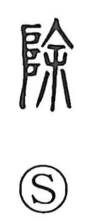

Explanation
除 is a phono-semantic character. Its phonetic element 余 gives the on-readings jo/ji and, in early forms, depicts a large handled needle used in ritual cursing; thrust into the earth, it drove out malevolent forces hidden below. Characters like 徐 and 叙 share this marker, and 途 portrays a road cleansed by such exorcism. The left element 阜, in ancient writing, pictured the gods’ ladder for descending from and ascending to heaven, evoking a sacred approach. Together they show the act of planting the great needle before a sacred place to purify it, expelling baleful energy—hence the sense harau, to exorcise, as in the phrase 壇を除す, clearing and sanctifying a site to erect an altar for meeting the gods. From this ritual clearing the meaning broadened to taking away what is old or unwanted, to remove and rid of.